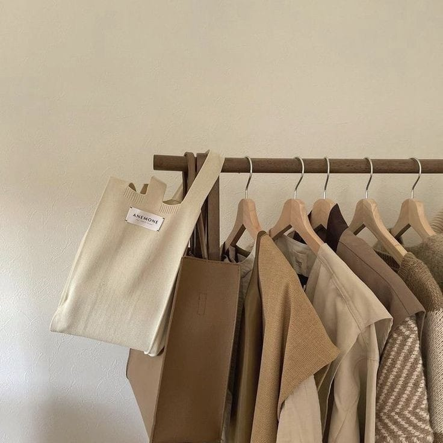

Empresa
Bienvenidos a Street Wear la marca de ropa urbana que revoluciona el estilo en Santiago del Estero. Nuestra pasión es crear prendas únicas y vanguardistas que reflejen la personalidad y actitud de aquellos que aman la moda callejera. En Street Wear fusionamos la esencia del arte urbano con las últimas tendencias de la moda, dando vida a diseños innovadores que no pasan desapercibidos. Cada prenda es cuidadosamente confeccionada con materiales de alta calidad, asegurando un ajuste perfecto y durabilidad. Nuestro equipo de diseñadores talentosos se inspira en la energía vibrante de Santiago del Estero para crear colecciones auténticas y llenas de estilo. Desde camisetas estampadas con grafittis urbanos hasta sudaderas con detalles modernos, en Streetwear encontrarás la combinación perfecta entre comodidad y sofisticación. Además, nos enorgullece apoyar a la comunidad local mediante colaboraciones con artistas callejeros y proyectos sociales. Creemos en el poder del arte para transformar y unir a las personas, y queremos ser una plataforma para aquellos que desean expresarse a través de la moda. Visítanos en nuestra tienda en el corazón de Santiago del Estero, donde te recibiremos con un ambiente acogedor y una atención personalizada. También puedes explorar nuestra página web y descubrir nuestra colección completa, realizar compras en línea y recibir tus prendas directamente en tu puerta. Street Wear, donde la moda y el espíritu urbano se encuentran para crear un estilo único. Únete a nuestra comunidad y sé parte del movimiento. ¡Viste con actitud, viste con Streetwear!
Productos
- Remeras
- Pantalones
- Camperas
- Accesorios


Contacto
Cualquier consulta podes comunicarte con nosotros via
- Instagram:@StreetWear.ar
- Whatsapp: 385678951
- Email: Dudas o consultas
